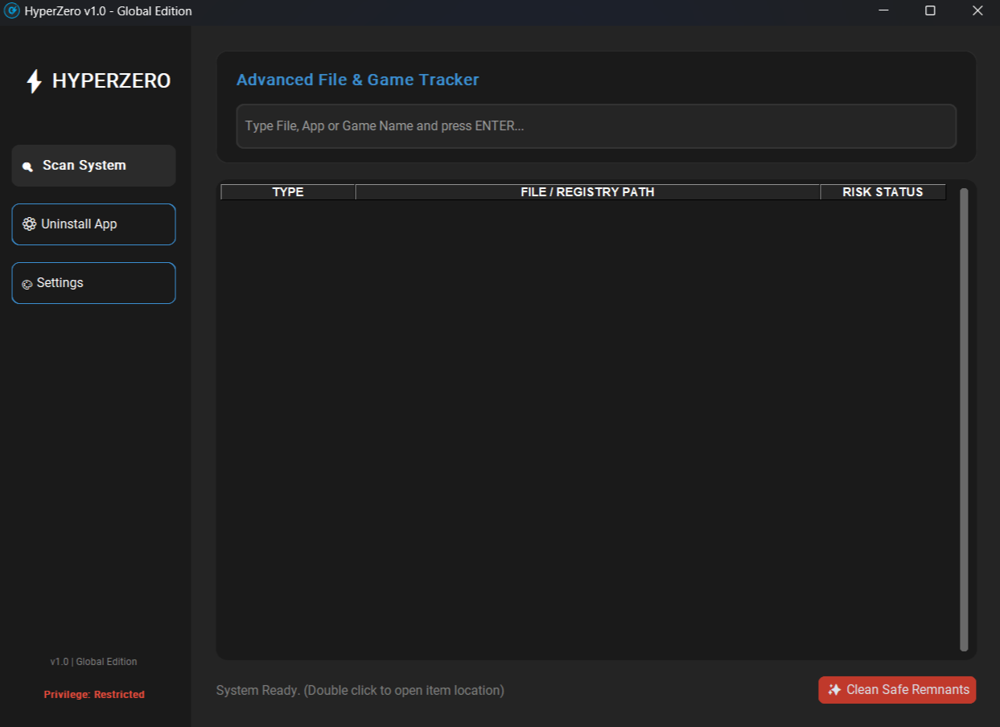

A professional system tool designed to root out stubborn app remnants, hidden game files, and registry traces.
Custom algorithm powered by PowerShell bypasses antivirus locks to forcefully delete and permanently destroy stubborn files.
Scans not just the C: drive, but simultaneously checks Steam and Epic Games libraries across all connected drives like D: and E:.
Know exactly what runs in the background thanks to its fully open-source structure. Offers 100% transparent and reliable system cleaning.

Ready to say goodbye to all the junk files slowing down your system. Review the features and start the installation.
A different vision that dives deep into the system, unlike classic uninstallation tools.
Standard Windows "Add/Remove Programs" tool leaves megabytes of temporary files, empty folders, and registry junk behind when deleting apps. This junk slows down your system and occupies storage space over time.
HyperZero searches for those hidden crumbs left behind after deleting a program across all disks (not just C; D, E, external drives) in milliseconds by name.
It supports analyzing the locations of all files and manually deleting them.
It triggers the integrated PowerShell destruction engine for stubborn files that cannot be deleted because they are locked or "In Use", and ruthlessly destroys the target. Moreover, it is completely open-source; it leaves no backdoors on your system and does not collect data.